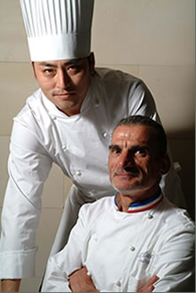
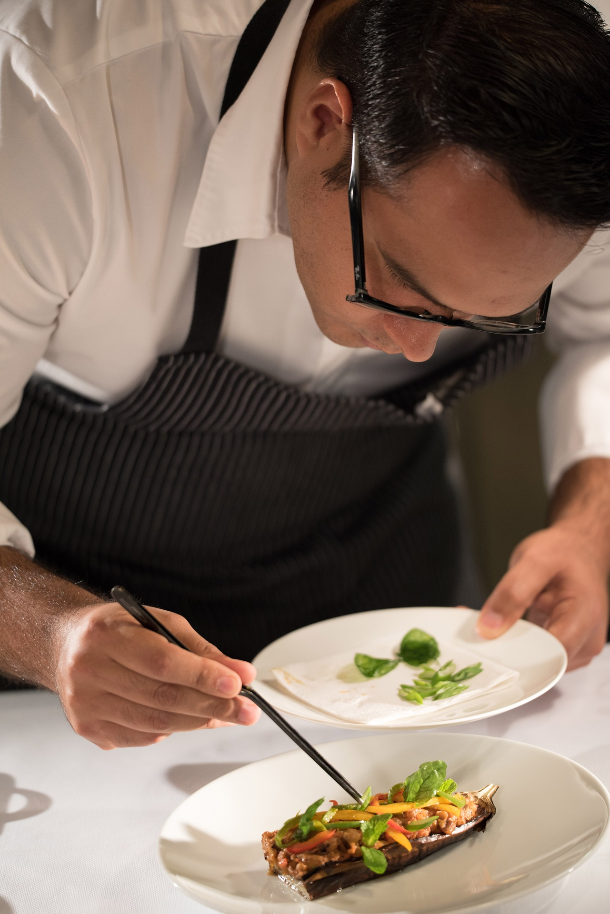

Chef


越智健太郎
1993
三重県、志摩観光ホテル「ラ・メール」入社
1996
同社を退社し、東京都渋谷区のレストラン「カーエム」入社
2000
同社を退社し、渡仏。フランス各地で、ブラッスリーから始まり、ミシュラン一ツ星から三ツ星まで数
軒のレストランで修業
2003
パリ16区の「アストランス」（現在、三ツ星）で、シェフのパスカル・バルボに師事
2004
「アストランス」にてシェフに次ぐポジションのスーシェフに就任
2005/11
スペインのサン・セバスチャンで開かれた、料理界でもっとも権威のあるガルシア・サントス主催の
学会＜LoMejor de la Gastronomia＞に招かれ、パスカル・バルボシェフと共にデモンストレーショ
ンを披露。その後「アストランス」を退社して、帰国
2006/5
「レストラン カンテサンス」を立ち上げる
2007/11
「ミシュランガイド東京 2008」で三ツ星を獲得 以降、2009、2010、2011年度版でも三ツ星を頂く
2011/4
運営会社の株式会社グラナダから独立し、オーナーシェフとなる。